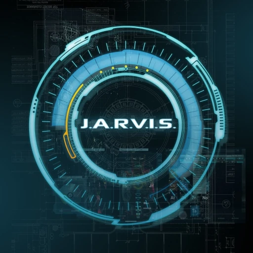

J.A.R.V.I.S.
Jarvis is an advanced artificial intelligence assistant developed by a team of skilled Python developers. Inspired by the AI assistant from the Iron Man movies, Jarvis is designed to be a powerful, multifunctional virtual companion. It excels in handling a wide range of tasks, making it an invaluable tool for enhancing productivity and efficiency.